My first print!
This week was an adeventure to say the least! I have been looking forward to learning how to 3D print for a few months now. When I learned I would be purchasing my own machine I was surprised at how relatively cheap the machine was. When it arrived, I was very intimidated t put it together. My partner surprisingly was really excited and wanted to help. The first half of the assembly went pretty smoothly (considering that the directions are only images with no word accompiament? When we started to assemble the Z bar that's when things took a confusing turn. I couldn't figure out how to square up the attachments and was becoming defeated. Then, I decided to look online to see if anyone had a helpful video for assembly. Thankfully, I found this video by Just Vlad which was super helpful. We followed his instructions until the end and had an easy time assembling the rest of the machine.
Leveling the bed was far more difficult. I downloaded the bed leveling files, but didn't understand the directions correctly. This led to some damages. I misunderstood the instructions and thought I had that level correctly, I moved onto the printing, and as you can guess, this is where disaster struck. I have two punctures and a faint line where the print started. Once I heard that awful sound I immediately raced over to my machine and flipped the off switch. I had to go back and review the
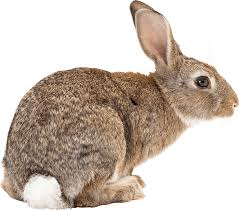
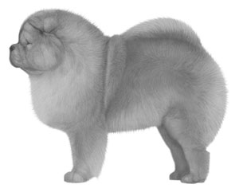

First, I found an image on the internet of the animals I wanted to make.
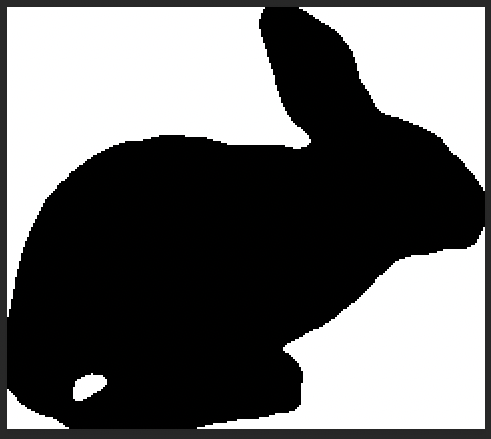 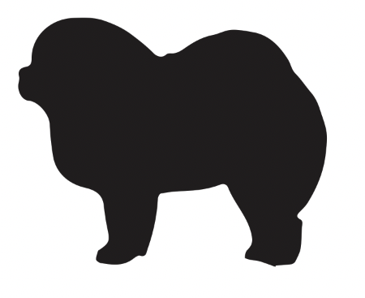 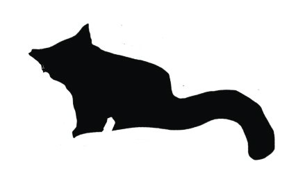
Next, I adjusted the levels, threshold, saturation, and color until I was satisified that the image would trace easily in Illustrator.
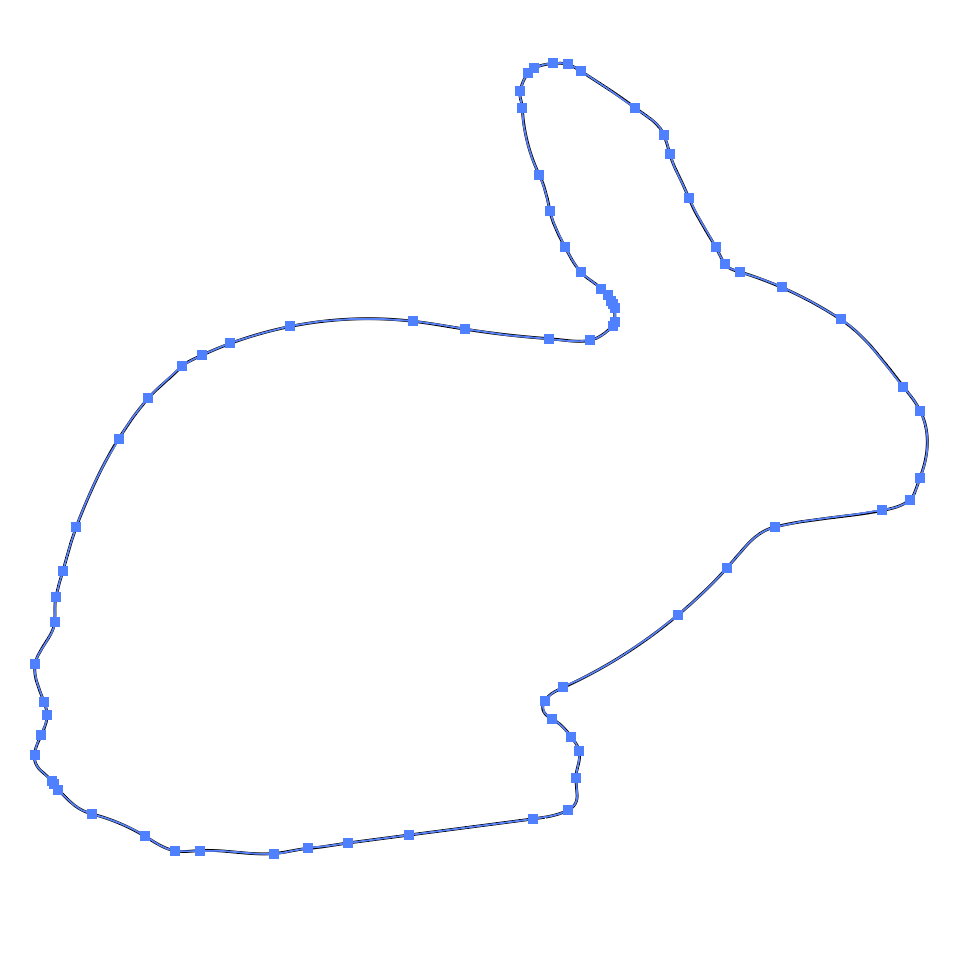 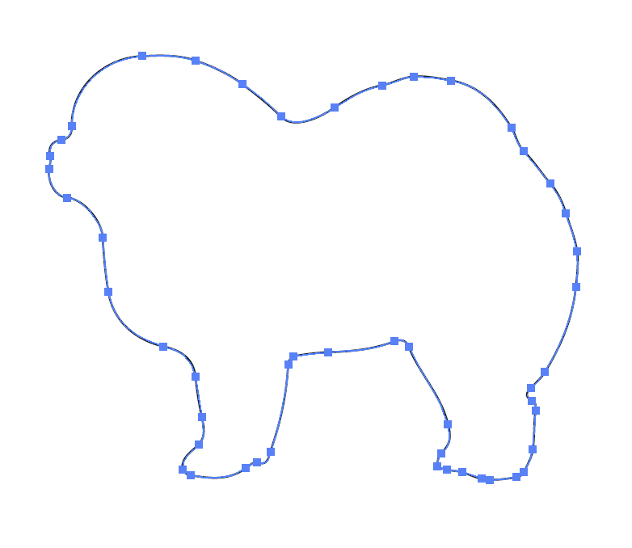 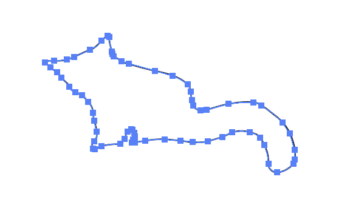
Once in Illustrator, I live traced the object, creating the vector points. Once I was satisified with the
vector files I exported the shapes as .dxf files.
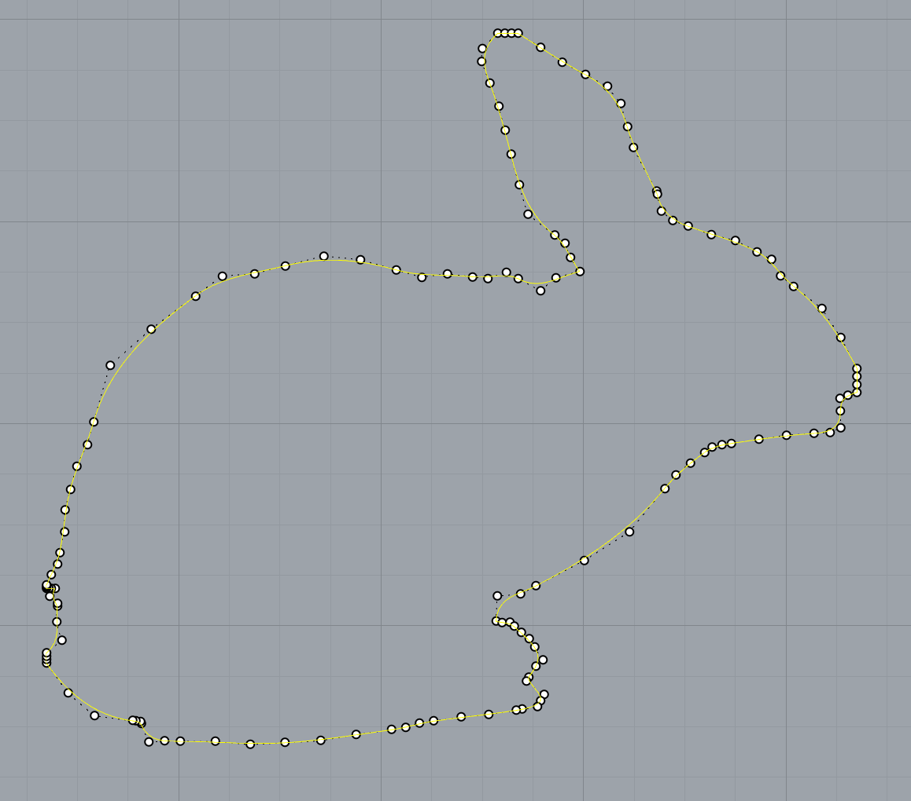
 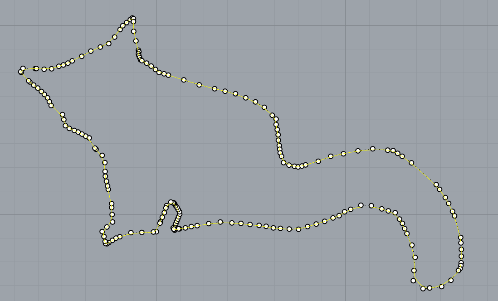
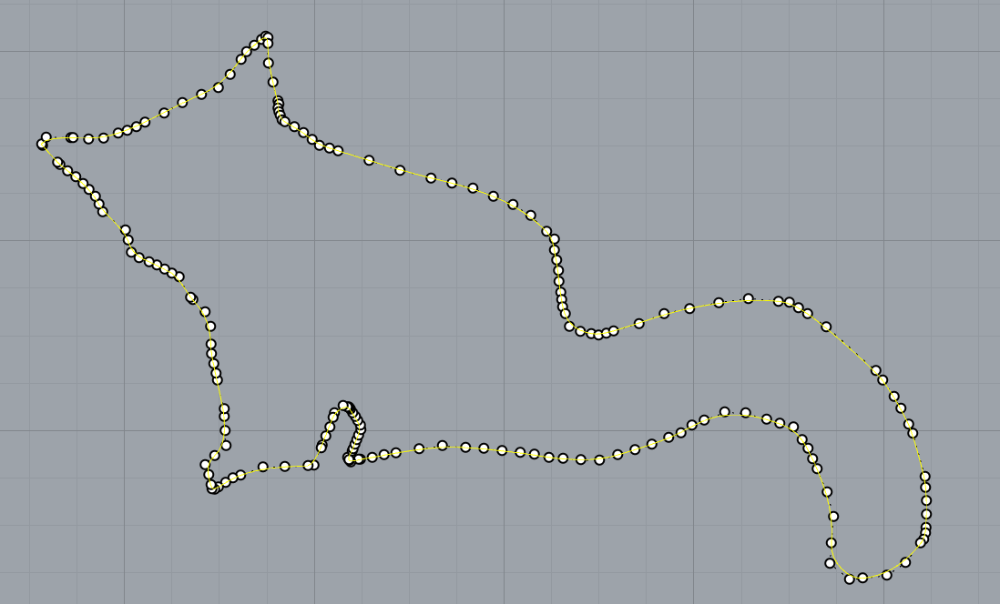
Next, I imported the .dxf file into Rhino. I exploded the shape so I could see the vector points, and make sure my objects were closed.
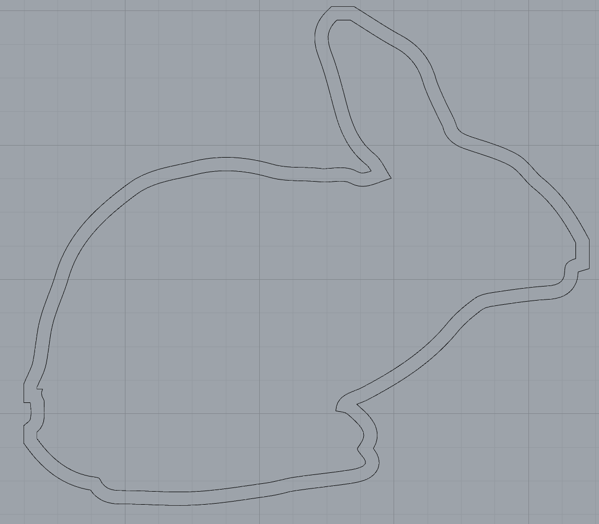 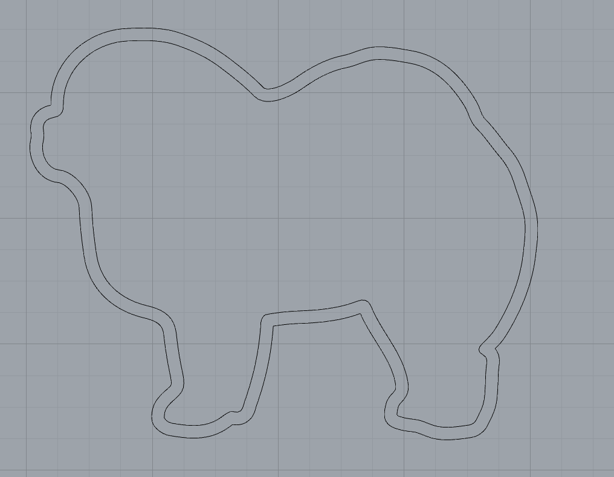 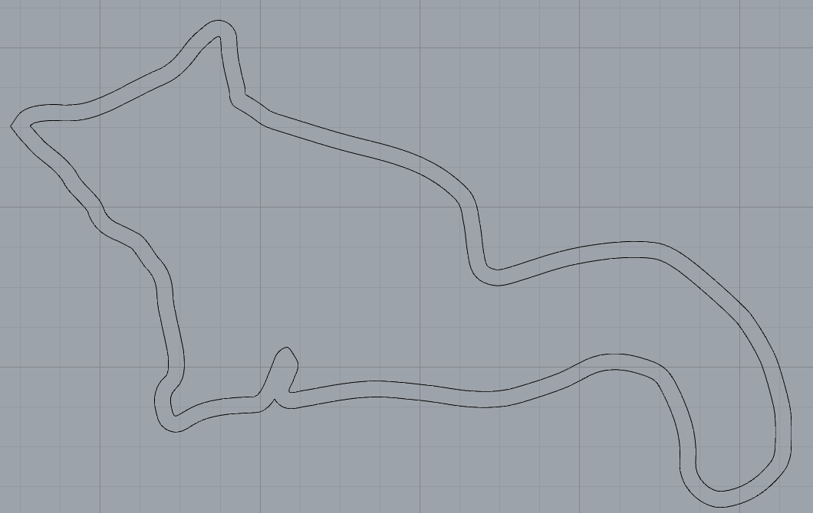
Then I used the offset function to create an outer wall (.1").
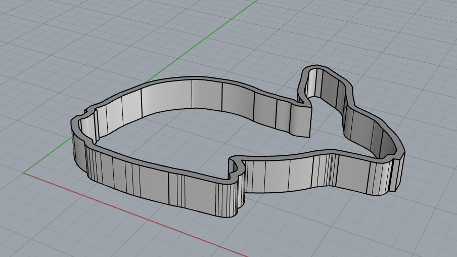 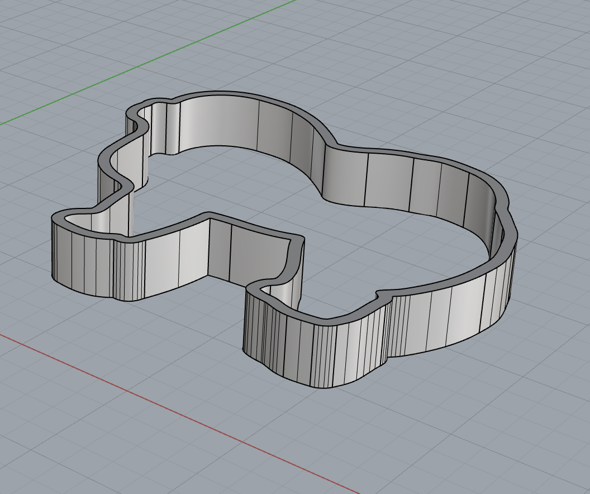 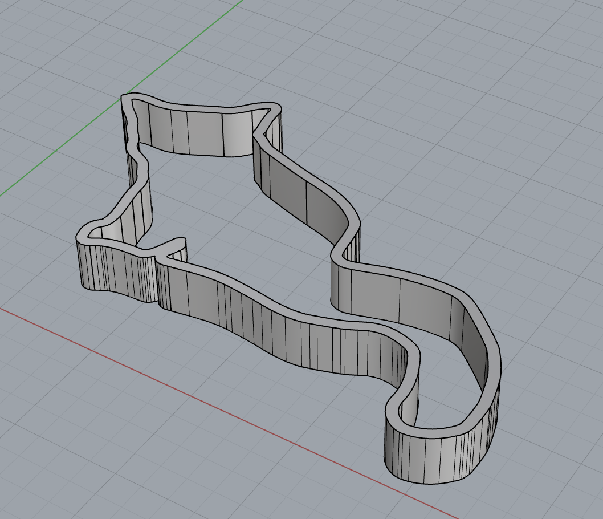
Once I had my outerwall, I used the extrude function to create the height (.5") and make solid shapes. I then exported the files as .stl.
In the coming weeks I would like to learn how to add a handle to my cookie cutters to make a more accessible version for people who have dexterity or mobility issues.
A special thanks to Junchao who helped me through this process!
Below are the links to the rhino files, .stl files, .dxf files, and .jpeg images.